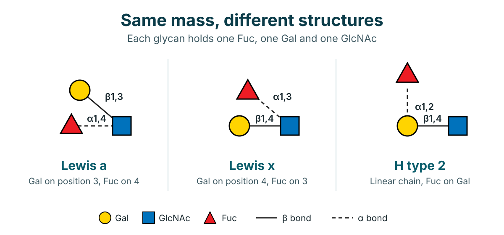
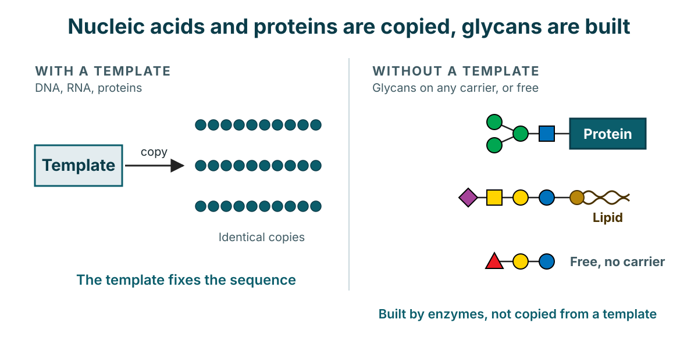
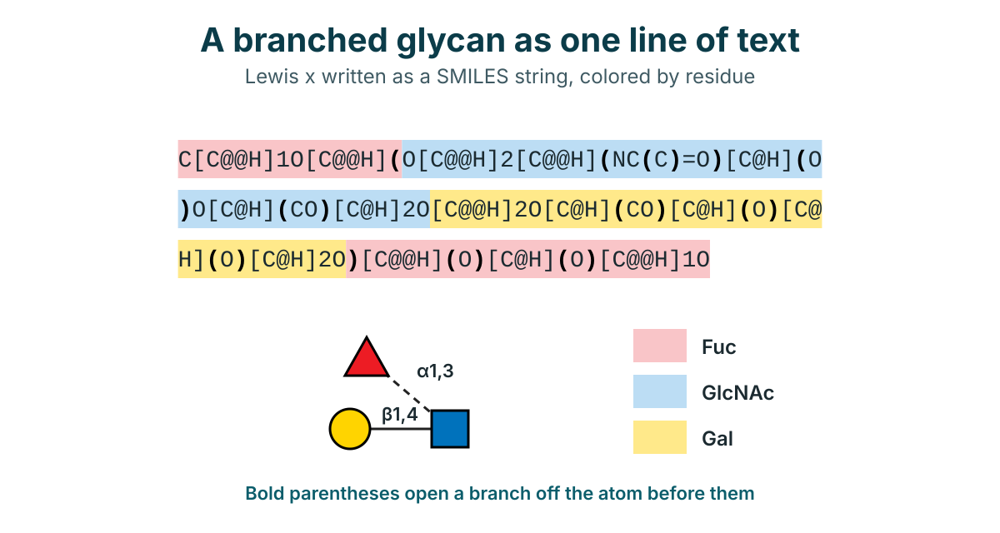

About this proposal
Efforts in both bioinformatics and experimental science have meaningfully advanced the characterization of glycosylation of biomolecules. Single molecule techniques for glycan sequencing are emerging, and computational workflows now cover glycan motif annotation, structure prediction from LC MS/MS data and protein glycan interaction modeling. Yet these advances remain scattered.
This page explains why a shared exercise is needed, how the hackathon would run, how results would be judged, and what would come out of it. It is a draft proposal, and every detail marked in square brackets is still to be confirmed.
Who
Computational and experimental glycoscientists, in mixed teams that combine different labs and backgrounds.
What
Teams define and pursue a specific challenge together, focused on methods and techniques.
Why
To fill each group's gaps by exchanging methods, toward common standards and benchmarks.
Result
Open code, data and outcomes on a public repository, and a joint publication.
1Why glycans are hard
Glycans combine three properties that make them very different from the proteins and nucleic acids that most computational tools were built for.
Branched and not template driven
Linkage, anomeric configuration and branching generate isomeric diversity. The resulting combinatorial complexity goes beyond what current methods handle in proteins or nucleic acids.
Not genome encoded
As post translational modifications, glycans are not directly encoded in the genome. They demand approaches distinct from those built for sequence based biomolecules.
Structurally ambiguous data
Mass spectrometry is still the dominant technique, but it often cannot resolve linkage and branching. Datasets are left with inherent structural ambiguity.


2What is still missing
Valuable resources and methods exist, spread across many groups. They do not yet add up to a shared foundation.
Resources that are not harmonized
GlyTouCan, GlyGen, UniCarbKB and GlyConnect all exist, but they remain incompletely harmonized. Because the platforms are scattered, some distrust has built up between groups. A common, neutral exercise is one way to rebuild it.
Several nomenclatures
Multiple coexisting nomenclatures hinder machine readability:
- IUPAC condensed
- Oxford
- SNFG
- Linear code
Chemical notations such as SMILES add yet another way of writing the same structure.
No ground truth
Protein science relies on the Protein Data Bank (PDB) as accepted ground truth. Glycoscience still lacks an equivalent benchmark corpus.
No shared evaluation
CASP, the Critical Assessment of protein Structure Prediction, gives protein structure prediction a shared way to compare methods, with scores such as GDT. Glycoscience has no comparable evaluation framework, so methods cannot be compared on equal terms.

3The hackathon
A hackathon inspired by CASP, bringing computational and experimental glycoscientists together on one shared, hands on space.
Mixed teams, one challenge
Participants form mixed teams that combine different labs and backgrounds. Each team defines and pursues a specific glycoscience challenge together. Examples of challenges:
Structure prediction
Predicting glycan structures, for example from LC MS/MS data.
Matching glycan and carrier
Linking a glycan to the molecule it decorates.
Structure function relationships
Relating what a glycan looks like to what it does.
Biological function
Understanding the biological function of glycan decorations.
Automation
Automating parts of the workflow, from sample preparation to data analysis and reporting.
A method exchange
Every group already has techniques that work well in its own lab. Glycothon is a place to exchange them, so each group can fill its own gaps with methods developed by others, and toward common standards. Experimentalists see what computational methods need from their data. Computational groups see what experiments can and cannot resolve.
Teams also look for opportunities to automate science. These include shared techniques, data analysis, simulation setup and preparation, workflow automation, laboratory automation and protocol standardization.
Offer and need
Each participant names one method they can offer and one gap in their own workflow they would like help with. Matching offers to needs is how mixed teams can form.
Scope
Who does what
Teams
Students and postdocs do the hands on work, in mixed teams of computational and experimental backgrounds.
Jury
Principal investigators form the judging panel and evaluate submissions on approach, novelty and reproducibility.
Data contributors
Groups can offer sampled or dummy data as references and for experimentation, without sharing unpublished findings.
4Evaluation and outcomes
Submissions are evaluated by a judging panel, and everything produced is kept open.
Judging criteria
- Approach
- How the team framed the challenge and the method it chose.
- Novelty
- What the submission adds beyond existing methods.
- Reproducibility
- Whether others can rerun the work from the shared code and data.
What comes out
- Open archive
- Code, data and outcomes from all teams are archived on a public repository.
- Joint publication
- Results are compiled toward a joint publication documenting the exercise.
- Lasting collaboration
- The format encourages benchmarking, cross disciplinary exchange and collaboration across a field that spans many methodologies.
Proposed timeline
A first sketch of the sequence, measured in weeks and months from the start of the call. Exact dates are still to be decided.
- Weeks 1 to 4Call and team formation
Interested groups register, and mixed teams form across labs and backgrounds.
- Weeks 5 to 8Challenge definition
Each team defines the challenge it will pursue.
- Weeks 9 to 10Hackathon
Teams work together in one shared space.
- Weeks 11 to 12Submission
Teams submit approach, code, data and results.
- Weeks 13 to 16Judging
The jury evaluates approach, novelty and reproducibility.
- Months 5 to 8Archive and publication
Everything goes to a public repository, and results are compiled toward a joint publication.
Organizers and evaluators
Names will be added once participation is confirmed.
| Role | Name | Affiliation |
|---|---|---|
| Organizer | [NAME] | [AFFILIATION] |
| Organizer | [NAME] | [AFFILIATION] |
| Judging panel | [NAME] | [AFFILIATION] |
| Judging panel | [NAME] | [AFFILIATION] |
Questions
Who can take part?
Computational and experimental glycoscientists. Teams are mixed, combining different labs and backgrounds.
Is this a basic research competition?
No. The hackathon focuses on developing methodologies and techniques for glycoscience, not on basic glycoscience research.
What kind of challenge can a team choose?
Each team defines its own specific glycoscience challenge. Examples include structure prediction, matching glycan and carrier, structure function relationships and the biological function of glycan decorations.
How are submissions judged?
A judging panel evaluates approach, novelty and reproducibility.
What happens to the code and data?
Code, data and outcomes from all teams are archived on a public repository, and results are compiled toward a joint publication.
Why a hackathon, and why inspired by CASP?
Protein science has the PDB as ground truth and CASP as a shared evaluation. Glycoscience has neither. A hackathon is a practical first step toward shared benchmarks and a common evaluation framework.
Get involved
We are building the pool of participants now. Tell us how you would like to take part. It takes about two minutes, and nothing you answer commits you to anything.
Join as a team member
For students and postdocs who want to work on a challenge in a mixed team.
Join the jury
For principal investigators who would like to evaluate submissions.
Offer data
Sampled or dummy data to serve as references and for experimentation. Real, unpublished results are not required.
The form collects your name, affiliation, role, areas of interest and whether you can provide reference data. Responses are stored in a spreadsheet seen only by the organizers.
Contact
[CONTACT EMAIL]